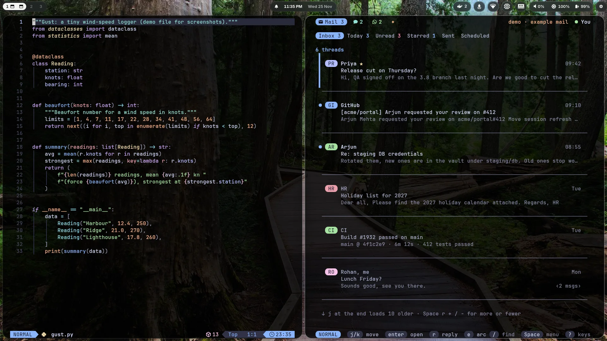
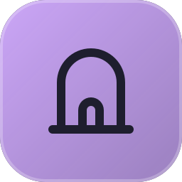
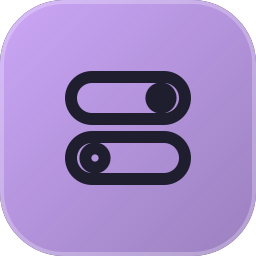
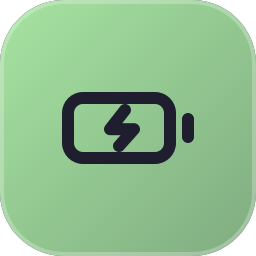

Keys first
Every panel opens on a key and is run from the keyboard. Inside every tool the same vim keys work: j k to move, / to search, Space for the menu, ? for every key.
One look
The bar, the panels, the terminal, Neovim and tmux all take their colours from one theme. Change it once in varna and every window follows, live.
Yours to read
Every config is a plain file in this repo, linked into place with GNU Stow. The tools are small, separate projects you can install, update or remove one at a time.
Made for Vayu
The desktop's own tools. Each is its own project with its own site, and works on other Wayland desktops too.
Panels in Vyom, the panel runtime

dvaraApps, their actions, open windows
kendraQuick settings- akashvaniNotifications and their history
 tarangWi-Fi and hotspot
tarangWi-Fi and hotspot setuBluetooth, with battery levels
setuBluetooth, with battery levels- smritiClipboard history
- bhavaEmoji
 mudraSearch every keybinding
mudraSearch every keybinding ganitCalculator and converter
ganitCalculator and converter
urjaBattery and power patraDocker containers
patraDocker containers- ragaSearch YouTube and play
 vishramLock, sleep, restart
vishramLock, sleep, restart
Apps
And the classics, set up with care
- SwaySwayFX
- Tiling, with real blur, rounded corners and shadows
- Waybar
- White icons; red only when something needs you
- Kitty + tmux
- Sessions that survive a reboot
- Neovim
- A small config of its own, no distro
- Zsh
- Powerlevel10k, completions, history search
- MPD
- The music library under nāda
Install
On a fresh Arch install: after archinstall, log in on the console as your own user, with the network up, and run one line.
Stable follows main: tagged releases only, the safe choice.
bash <(curl -fsSL https://raw.githubusercontent.com/Theyashsawarkar/vayu/main/install.sh) stableWhat it does
Installs every package, links every config into place, sets up zsh, tmux and Neovim, the login screen and the boot splash, and turns on the services. Files already in the way are backed up first. Safe to run again.
What it needs
- Your user can use
sudo - archlinux.org, github.com and the AUR can be reached
- About 15 GB free in your home folder
If a step fails
The rest still runs, and the summary says how to fix each failure. The full log is in ~/.local/state/vayu/install-logs/. Troubleshooting lists known problems.